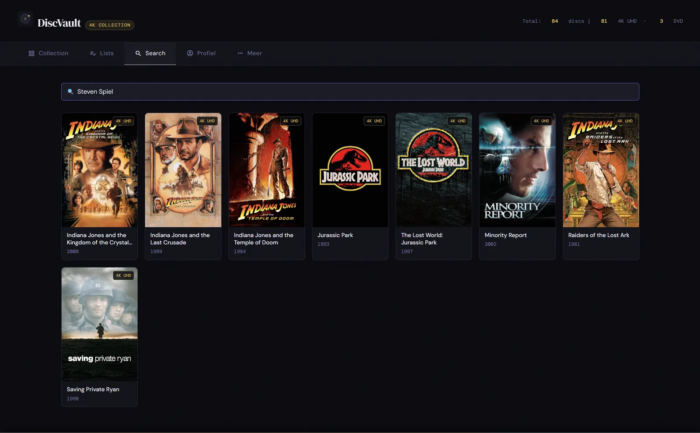
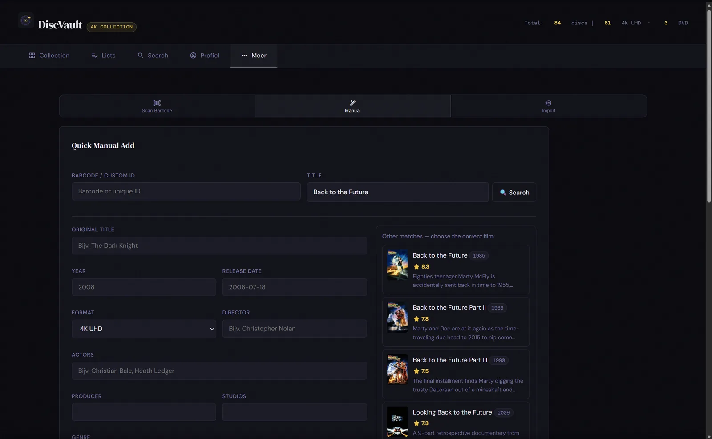
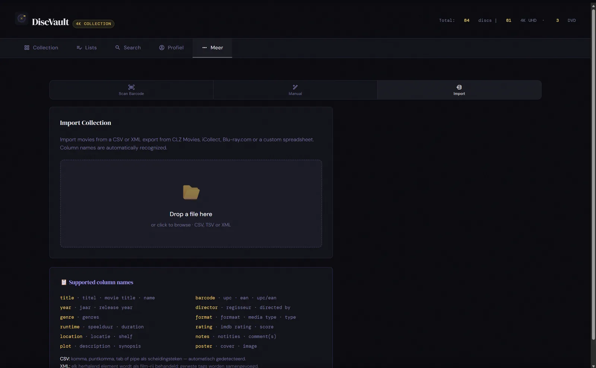
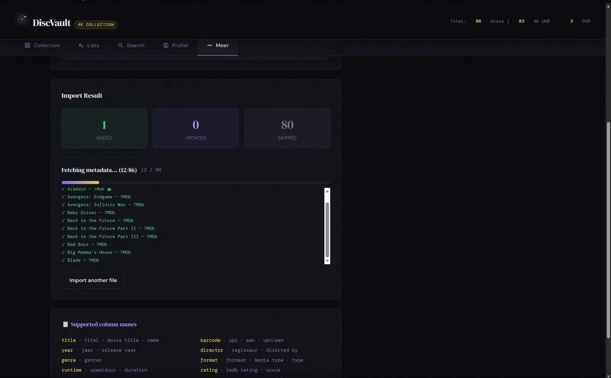
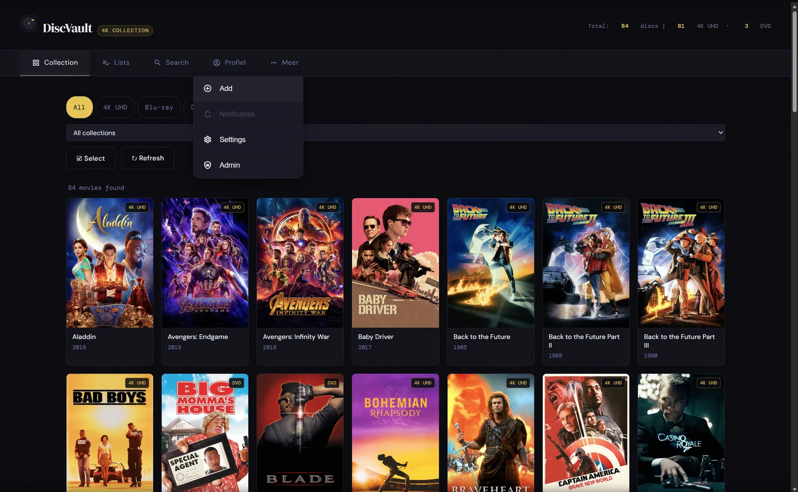
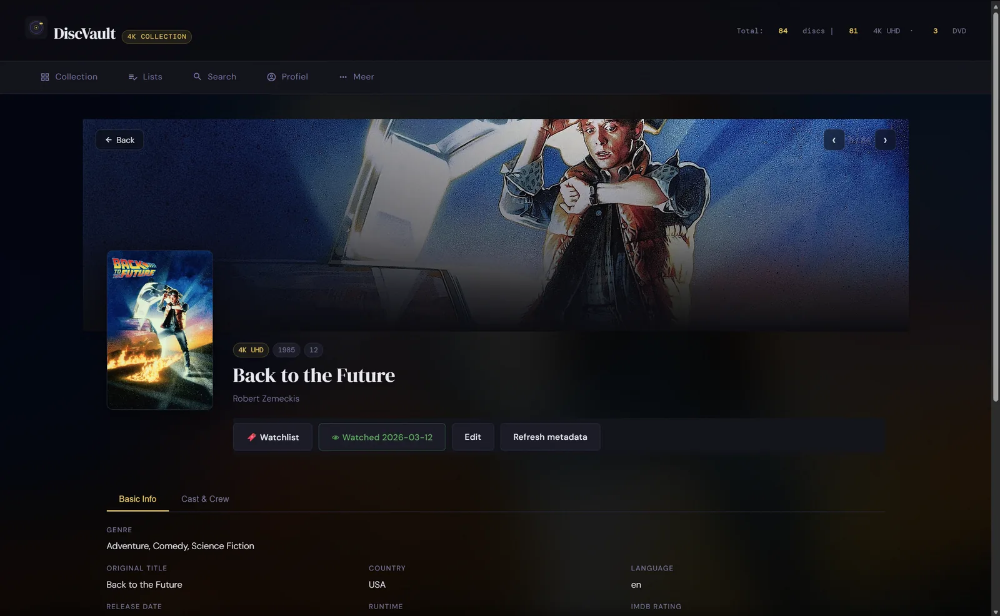
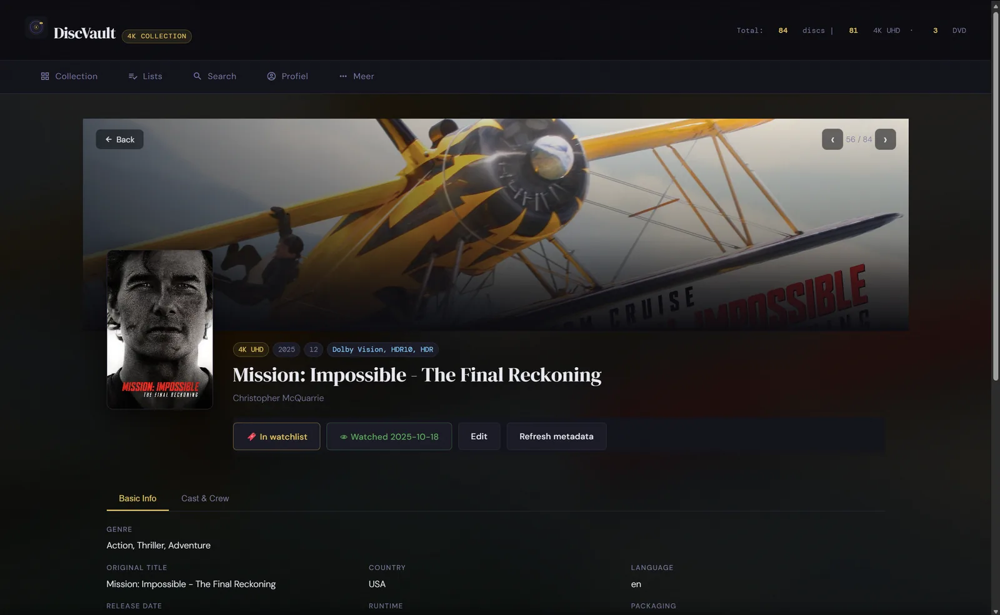
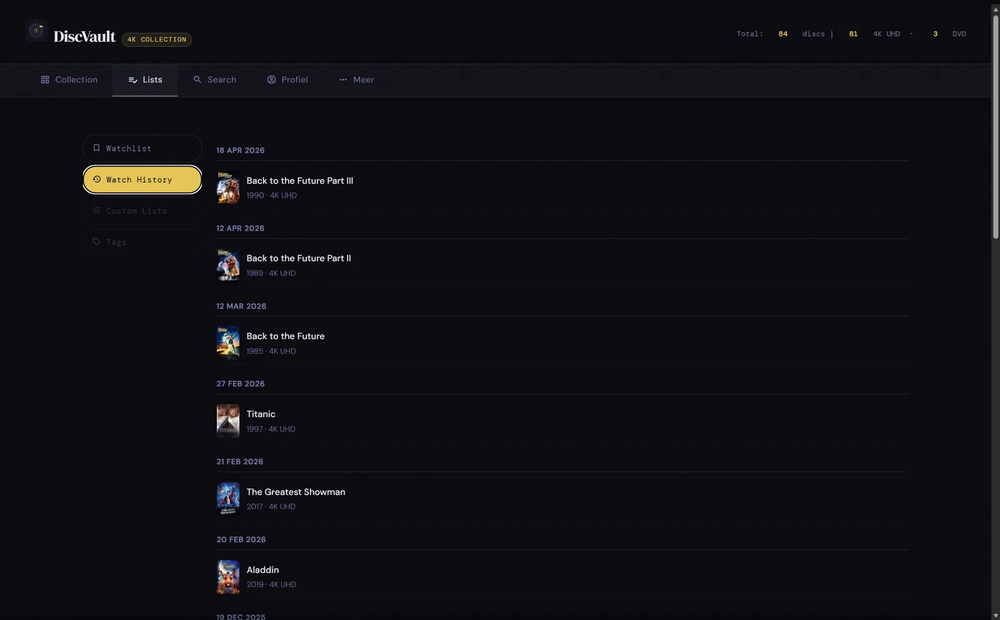
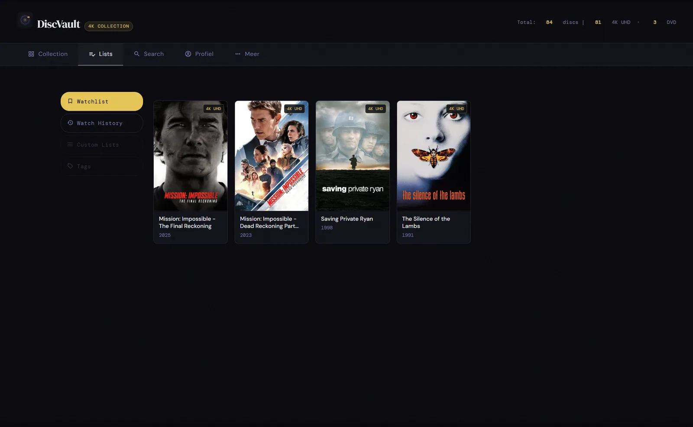

Watchlist
Bewaar titels die je nog wilt kijken en gebruik de lijst als persoonlijke planning.
Gebruikershandleiding
Gebruik DiscVault om fysieke films toe te voegen, zoeken, filteren, importeren en bij te houden wat je nog wilt zien of al hebt gekeken.

Toevoegen



Collectie




Persoonlijk
Bewaar titels die je nog wilt kijken en gebruik de lijst als persoonlijke planning.
MemberGroups maken gedeelde collectieviews mogelijk met uitnodigingen, zonder te claimen dat er real-time samenwerking is.
